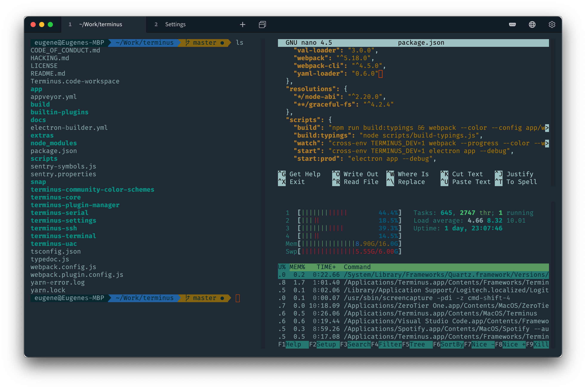
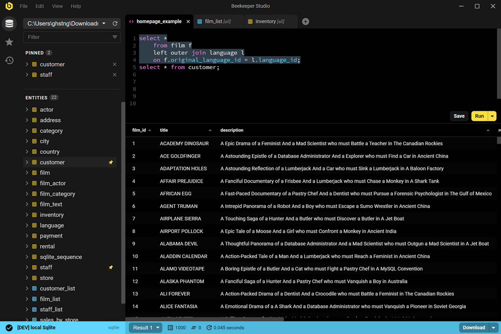
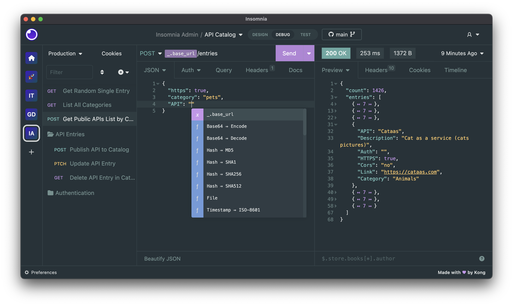
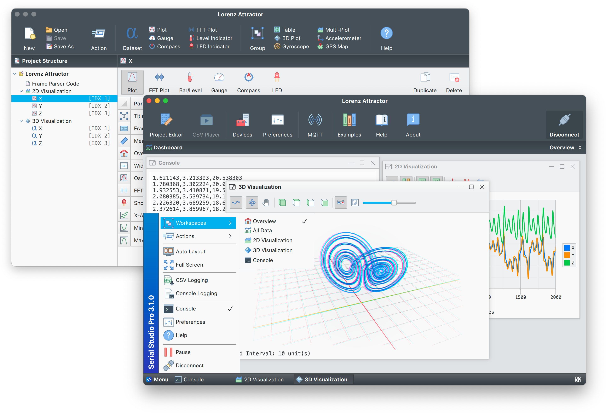

Tabby
终端优先、会话上下文和分屏。图为仓库历史截图。


原始来源2026-10-31 · 实际查看的仓库截图，可能来自历史版本，本轮未运行这些产品。截图权利归原作者，仅作本地设计调研，不进入产品发行包。
终端优先、会话上下文和分屏。图为仓库历史截图。

原始来源资源列表、主工作区和状态底栏。

原始来源操作与响应相邻，状态和证据关联。

原始来源能力视图可扩展。图为多窗口组合，不直接照搬。

原始来源